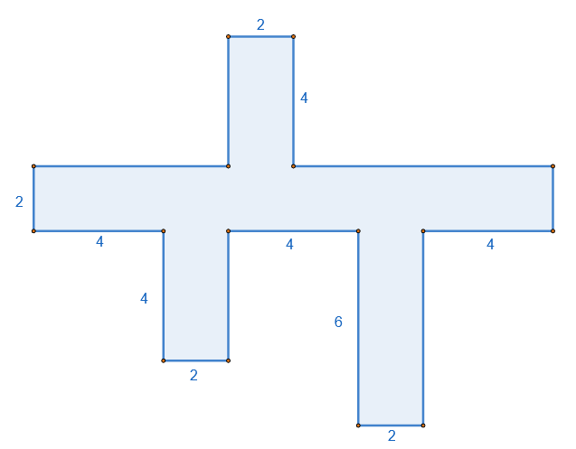

1 Πρόσθεση, αφαίρεση και πολλαπλασιασμός φυσικών αριθμών
1.1 Πρόσθεση Φυσικών Αριθμών
Θεωρία & Ορισμοί
Ορισμός: Πρόσθεση είναι η πράξη με την οποία από δύο φυσικούς αριθμούς \(\alpha\) και \(\beta\) (προσθετέοι), βρίσκουμε έναν τρίτο φυσικό αριθμό \(\gamma\) (άθροισμα). Συμβολίζεται με το «\(+\)» και η διαδικασία αντιστοιχεί στην ένωση δύο ξένων συνόλων.
Εσωτερική Πράξη: Το άθροισμα δύο φυσικών αριθμών είναι πάντα φυσικός αριθμός.
Ιδιότητες
Αντιμεταθετική: Μπορούμε να αλλάζουμε τη σειρά των προσθετέων χωρίς να αλλάζει το άθροισμα (\(\alpha + \beta = \beta + \alpha\)).
Προσεταιριστική: Σε άθροισμα τριών αριθμών, μπορούμε να αντικαταστήσουμε προσθετέους με το άθροισμά τους ή να αλλάξουμε την ομαδοποίησή τους [\((\alpha + \beta) + \gamma = \alpha + (\beta + \gamma)\)].
Ουδέτερο Στοιχείο: Το μηδέν (\(0\)) δεν μεταβάλλει τον αριθμό στον οποίο προστίθεται (\(\alpha + 0 = \alpha\)).
Παραδείγματα
- \(13 + 5 = 18\).
- \(3 + 6 = 9\) και \(6 + 3 = 9\) (Επαλήθευση αντιμεταθετικής ιδιότητας).
- \((5 + 4) + 2 = 9 + 2 = 11\) και \(5 + (4 + 2) = 5 + 6 = 11\) (Επαλήθευση προσεταιριστικής ιδιότητας).
Ασκήσεις
- Υπολογίστε το άθροισμα: \(3.582 + 7.591\).
- Βρείτε το \(x\) στην εξίσωση: \(x + 3 = 10\).
- Εκτελέστε την πράξη: \(122 + 332\).
- Υπολογίστε νοερά: \(64 + 21 + 24 + 19\).
- Συμπληρώστε το κενό: \(32 + ... = 32\).
- Βρείτε το άθροισμα των φυσικών αριθμών από το \(1\) έως το \(9\).
- Αν \(\alpha + \beta = 25\), υπολογίστε την τιμή: \(10 + \alpha + \beta + 5\).
- Προσθέστε τα μήκη: \(15 \text{m} + 28 \text{m} + 300 \text{cm}\).
- Εκτελέστε την πρόσθεση: \(1.497 + 2.689 + 601\).
- Λύστε την εξίσωση: \(7 + x = 15\).
1.2 Αφαίρεση Φυσικών Αριθμών
Θεωρία & Ορισμοί
Ορισμός: Αφαίρεση είναι η πράξη με την οποία, όταν δίνονται δύο αριθμοί \(M\) (μειωτέος) και \(A\) (αφαιρετέος), βρίσκουμε έναν αριθμό \(\Delta\) (διαφορά), ο οποίος όταν προστεθεί στον \(A\) δίνει τον \(M\) (\(M - A = \Delta\)).
Περιορισμός: Στους φυσικούς αριθμούς, η αφαίρεση είναι δυνατή μόνο αν ο αφαιρετέος είναι μικρότερος ή ίσος του μειωτέου (\(M \ge A\)).
Αντίστροφη Πράξη: Η αφαίρεση θεωρείται η αντίστροφη πράξη της πρόσθεσης.
Ιδιότητες
Σχέση με Μηδέν: \(\alpha - 0 = \alpha\) και \(\alpha - \alpha = 0\).
Θεμελιώδης Ιδιότητα: Η διαφορά δεν μεταβάλλεται αν προσθέσουμε ή αφαιρέσουμε τον ίδιο αριθμό και στους δύο όρους της [\(\alpha - \beta = (\alpha + \gamma) - (\beta + \gamma)\)].
Μη Αντιμεταθετική: Η αφαίρεση δεν είναι αντιμεταθετική πράξη στους φυσικούς αριθμούς.
Παραδείγματα
- \(16 - 7 = 9\), διότι \(9 + 7 = 16\).
- \(20 - 8 = 12\).
- \(30 - 18 = 12\).
Ασκήσεις
- Εκτελέστε την αφαίρεση: \(3.452 - 865\).
- Λύστε την εξίσωση: \(x - 30 = 50\).
- Βρείτε το \(x\): \(15 - x = 8\).
- Υπολογίστε τη διαφορά: \(13.005 - 9.678\).
- Ποιο είναι το αποτέλεσμα της πράξης \(635 - 536\);.
- Υπολογίστε νοερά: \(285 - 79\).
- Εκτελέστε την πράξη: \(829.310 - 497.583\).
- Λύστε την εξίσωση: \(x + 20 = 25\).
- Υπολογίστε το αποτέλεσμα: \(100 - (30 + 20)\).
- Βρείτε την τιμή της παράστασης: \((524 - 99) - 75\).
1.3 Πολλαπλασιασμός Φυσικών Αριθμών
Θεωρία & Ορισμοί
Ορισμός: Πολλαπλασιασμός είναι η πράξη με την οποία από δύο φυσικούς αριθμούς \(\alpha\) και \(\beta\) (παράγοντες), βρίσκουμε έναν τρίτο φυσικό αριθμό \(\gamma\) (γινόμενο). Ορίζεται επίσης ως το άθροισμα \(a\) προσθετέων ίσων με \(\beta\).
Ορολογία: Ο πρώτος παράγοντας λέγεται πολλαπλασιαστής και ο δεύτερος πολλαπλασιαστέος.
Ιδιότητες
Αντιμεταθετική: Το γινόμενο δεν αλλάζει αν αλλάξουμε τη σειρά των παραγόντων (\(\alpha \cdot \beta = \beta \cdot \alpha\)).
Προσεταιριστική: Μπορούμε να ομαδοποιούμε τους παράγοντες με διαφορετικό τρόπο χωρίς να αλλάζει το αποτέλεσμα [\((\alpha \cdot \beta) \cdot \gamma = \alpha \cdot (\beta \cdot \gamma)\)].
Ουδέτερο Στοιχείο: Η μονάδα (\(1\)) δεν μεταβάλλει τον αριθμό με τον οποίο πολλαπλασιάζεται (\(\alpha \cdot 1 = \alpha\)).
Επιμεριστική Ιδιότητα (ως προς την πρόσθεση/αφαίρεση): \(\alpha \cdot (\beta \pm \gamma) = \alpha \cdot \beta \pm \alpha \cdot \gamma\).
Ιδιότητα του Μηδενός: Κάθε αριθμός επί μηδέν ισούται με μηδέν (\(\alpha \cdot 0 = 0\)).
Παραδείγματα
- \(7 \cdot 6 = 42\).
- \(35 \cdot 10 = 350\).
- \(89 \cdot 7 + 89 \cdot 3 = 89 \cdot (7 + 3) = 89 \cdot 10 = 890\) (Εφαρμογή επιμεριστικής).
Ασκήσεις
- Υπολογίστε το γινόμενο: \(421 \cdot 100\).
- Εκτελέστε την πράξη: \(284 \cdot 99\) (χρησιμοποιώντας επιμεριστική).
- Βρείτε το γινόμενο των φυσικών αριθμών μεταξύ \(0\) και \(10\).
- Υπολογίστε νοερά: \(84 \cdot 21\) (ως \(84 \cdot 20 + 84 \cdot 1\)).
- Εκτελέστε τον πολλαπλασιασμό: \(5.879 \cdot 346\).
- Υπολογίστε την τιμή: \(23 \cdot 49 + 77 \cdot 49\).
- Βρείτε το αποτέλεσμα: \(3 \cdot 13\).
- Εκτελέστε την πράξη: \(4.375 \cdot 169\).
- Συμπληρώστε το κενό: \(23 \cdot ... = 0\).
- Υπολογίστε το γινόμενο: \(7.567 \cdot 694\).
1.4 Ασκήσεις
- Συμπλήρωση Κενών (Ιδιότητες Πράξεων)
Συμπλήρωσε τα παρακάτω κενά:
- α. Η ιδιότητα \(x + y = y + x\) λέγεται ………………………………………………………………………..
- β. Η ιδιότητα \(x \cdot (y \cdot z) = (x \cdot y) \cdot z\) λέγεται ……………………………………………………………….
- γ. Ο αριθμός που αν τον πολλαπλασιάσουμε με έναν αριθμό \(\alpha\) δίνει γινόμενο \(\alpha\) είναι το ……………
- δ. Το αποτέλεσμα της διαίρεσης λέγεται …………………………………………………………………….
- ε. Σε μια αφαίρεση ο Μειωτέος \((Μ)\), ο Αφαιρετέος \((Α)\), και η διαφορά \((Δ)\) συνδέονται με τη σχέση: …………………………………………………………………………………………..
- στ. Η ιδιότητα \(\alpha \cdot \beta = \beta \cdot \alpha\) λέγεται ………………………………………………………………………..
- ζ. Η ιδιότητα \((x + y) + z = x + (y + z)\) λέγεται ………………………………………………………………..
- η. Η ιδιότητα \(\alpha \cdot (\beta - \gamma) = \alpha \cdot \beta - \alpha \cdot \gamma\) λέγεται ……………………………………………………….
- Πολλαπλασιασμοί με Δυνάμεις του 10
Συμπλήρωσε τα γινόμενα:
- α. \(84 \cdot [\dots] = 8.400\)
- β. \(125 \cdot [\dots] = 12.500\)
- γ. \(630 \cdot [\dots] = 6.300.000\)
- Κρυπτογραφική Πρόσθεση & Αφαίρεση
- α. Συμπλήρωσε τα κενά με τους κατάλληλους αριθμούς, ώστε να προκύψουν σωστά αποτελέσματα:
- β. Συμπλήρωσε τα κενά με τους κατάλληλους αριθμούς, ώστε να προκύψουν σωστά αποτελέσματα:
- Προτεραιότητα Πράξεων
Αντιστοίχισε κάθε γραμμή της πρώτης στήλης με ένα από τα αποτελέσματα της δεύτερης στήλης:
| Πράξη | Αποτέλεσμα |
|---|---|
| \(2 + 3 \cdot 4 + 5\) | \(11\) |
| \((2 + 3) \cdot (4 + 5)\) | \(45\) |
| \(2 + 3 \cdot (4 + 5)\) | \(19\) |
| \((2 + 3) \cdot 4 + 5\) | \(29\) |
| \(25\) |
- Υπολογισμοί και Επιλογή Σωστού
Τοποθέτησε ένα “X” στην αντίστοιχη θέση του σωστού αποτελέσματος:
- α. \(245 + 55 =\) (300 / 310 / 290)
- β. \(150 - 65 =\) (85 / 95 / 75)
- γ. \(12 \cdot 5 + 10 =\) (70 / 180 / 60)
- δ. \(40 : (10 - 2) =\) (2 / 5 / 8)
- Επιμεριστική Ιδιότητα
Υπολόγισε τα παρακάτω γινόμενα χρησιμοποιώντας την επιμεριστική ιδιότητα:
- α. \(4 \cdot 102\)
- β. \(6 \cdot 98\)
- γ. \(15 \cdot 11\)
- δ. \(8 \cdot 1.005\)
- Εμβαδόν Σχήματος
Υπολόγισε το εμβαδόν του παρακάτω σχήματος , χωρίζοντάς το σε ορθογώνια και χρησιμοποιώντας την επιμεριστική ιδιότητα.

- Προβλήματα Αγοράς
Αγοράσαμε τρεις συσκευές που κόστιζαν: \(420 \text{ €}\), \(180 \text{ €}\) και \(350 \text{ €}\).
- α. Υπολόγισε πρόχειρα (με στρογγυλοποίηση) αν φτάνουν \(1.000 \text{ €}\) για να πληρώσουμε.
- β. Βρες ακριβώς πόσα χρήματα θα πληρώσουμε.
- Διαχείριση Χρημάτων
Η Μαρία βγήκε για ψώνια έχοντας \(120 \text{ €}\). Αγόρασε ένα βιβλίο που κόστιζε \(18 \text{ €}\), μια τσάντα που κόστιζε \(45 \text{ €}\) και ένα ζευγάρι ακουστικά που κόστιζαν \(32 \text{ €}\). Της φτάνουν τα χρήματα για να τα αγοράσει όλα; Πόσα θα της περισσέψουν ή πόσα θα της λείπουν;
- Αποθήκη Προϊόντων
Σε μια αποθήκη υπήρχαν \(450\) κιλά πατάτες και \(320\) κιλά κρεμμύδια. Πουλήθηκαν \(215\) κιλά πατάτες και \(180\) κιλά κρεμμύδια. Πόσα κιλά λαχανικά έμειναν συνολικά στην αποθήκη;
- Ηλικίες
Ο Πέτρος γεννήθηκε το \(1995\). Η αδερφή του, η Άννα, είναι \(4\) χρόνια μεγαλύτερή του.
- α. Πόσων χρονών είναι ο Πέτρος σήμερα (το \(2024\));
- β. Πότε γεννήθηκε η Άννα;
- Χωρητικότητα Πάρκινγκ
Ένα πάρκινγκ έχει \(5\) ορόφους. Οι \(3\) πρώτοι όροφοι έχουν από \(40\) θέσεις ο καθένας και οι υπόλοιποι \(2\) όροφοι έχουν από \(35\) θέσεις ο καθένας. Αν μέσα στο πάρκινγκ βρίσκονται ήδη \(150\) αυτοκίνητα, πόσες κενές θέσεις υπάρχουν ακόμα;